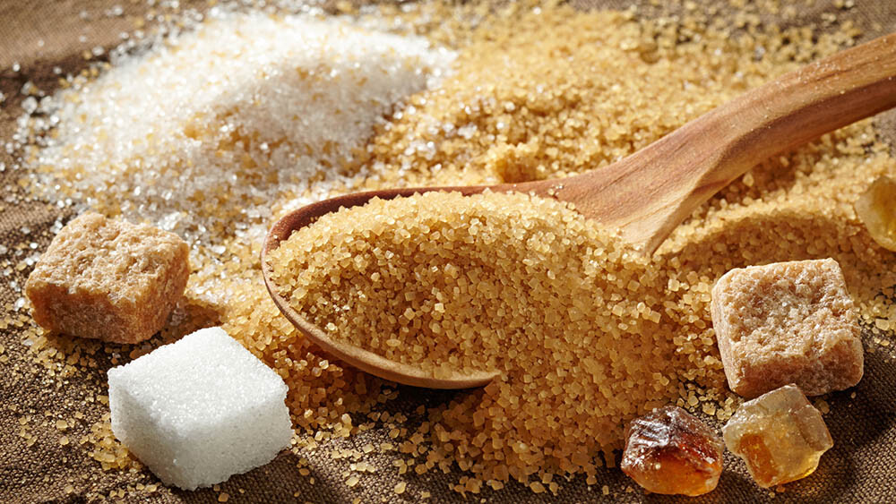

A História do Açúcar
O Açúcar
O açúcar é um termo genérico para carboidratos cristalizados comestíveis, principalmente sacarose, lactose e frutose. Especificamente, monossacarídeos e oligossacarídeos pequenos. A sua principal característica é o sabor adocicado. Em culinária, quando se fala em "açúcares", costumam se excluir os polióis da definição de açúcar, restando todos os monossacarídeos e dissacarídeos. No singular, "açúcar" costuma se referir à sacarose, identificando outros açúcares por seus nomes específicos (glicose, frutose etc). A produção e o comércio de açúcar influenciaram a história de várias maneiras. Em tempos modernos, o açúcar influenciou o colonialismo, a escravidão, migrações domésticas e internacionais e guerras. O açúcar possui uma propriedade, a triboluminescência, que faz com que ele brilhe quando friccionado. A cana-de-açúcar é originária da Índia. Açúcar foi produzido no subcontinente indiano desde a antiguidade. Porém não era de fácil acesso: o mel era usado com maior frequência para se adoçar os alimentos na maior parte do mundo. Uma das primeiras menções à cana-de-açúcar aparece em manuscritos antigos de chineses datados do oitavo século antes de Cristo. Ao redor de 500 a.C, habitantes do subcontinente indiano faziam grandes cristais de açúcar para facilitar o transporte e armazenamento. Esses cristais, chamados khanda (खण्ड), são semelhantes aos pães de açúcar que eram a principal forma de açúcar até o desenvolvimento de açúcar granulado e em cubos no final do século XIX. A cana-de-açúcar foi uma cultura de acesso limitado e açúcar uma mercadoria rara durante muito tempo. Os cruzados levaram açúcar para casa na sua volta à Europa após suas campanhas na Terra Santa, onde eles encontraram caravanas carregando "sal doce". No começo do século XII, Veneza adquiriu algumas vilas perto de Tiro e organizou propriedades rurais para produzir açúcar para exportar para Europa, onde ele suplementou o mel como a única outra forma de adoçante. O cronista cruzado Guilherme de Tiro, escrevendo no final do século XII, descreveu o açúcar como "muito necessário para o uso e saúde da humanidade".
Vinicius dos Santos Tavares - GU3017087 || José Soares da Silva Junior - GU3017192 || Rayssa Mara Amaral - GU3016536